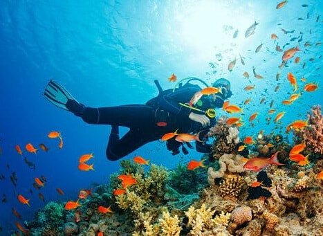
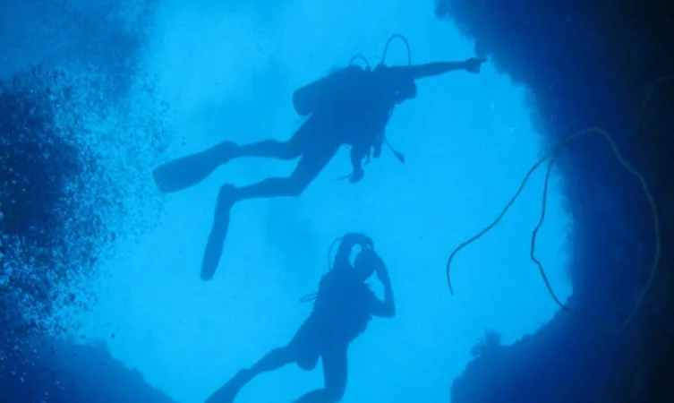
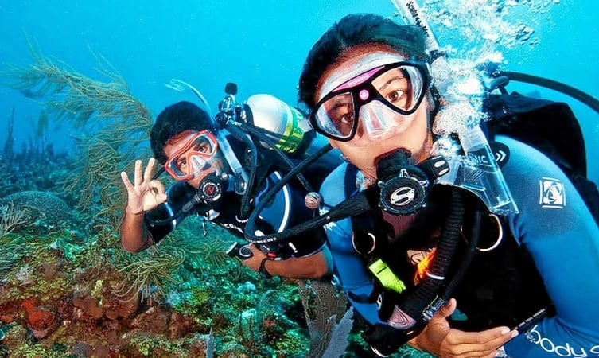
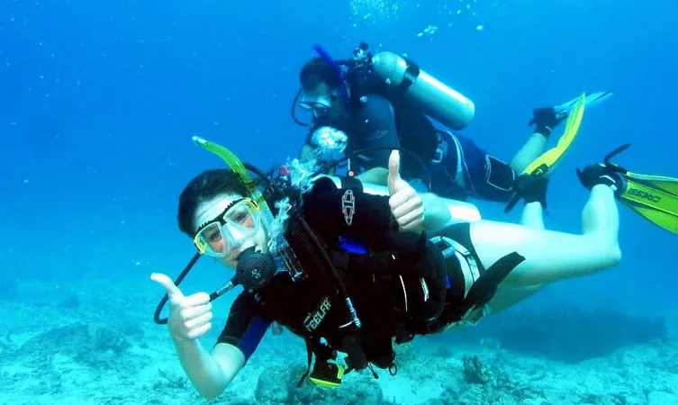
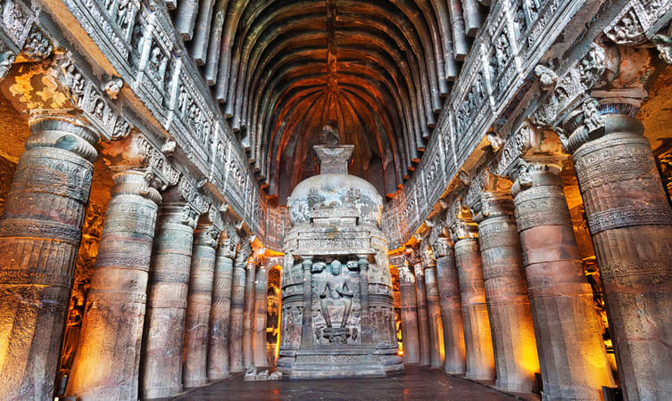
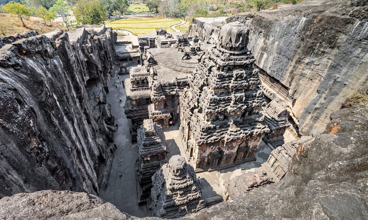
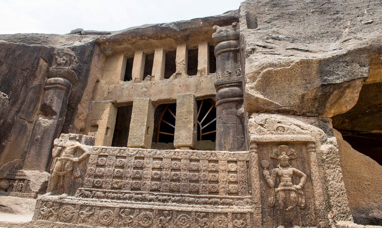
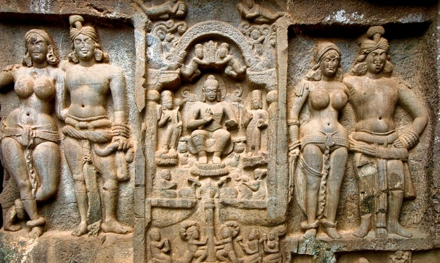

<div class="container-fluid">
    <div class="row">
        <div class="col-md-12">
          <div class="card bg-dark text-white">
            
            <div class="card-img-overlay">
            <h5 class="card-title-main">Explore the Unfold Side</h5>
            </div>
          </div>
          <div class="p1 mt-3">
            <p>
                <i class="fa fa-quote-left fa-3x fa-pull-left fa-border" aria-hidden="true"></i>
                Maharashtra is a paradise for scuba divers that offers a golden chance to enjoy a very enthralling water sport. 
                One of the most exotic adventure sports, scuba diving tops the things to do list in the state, where all one needs for it, is a little bit of briefing,
                 and the right gears.
                In Maharashtra, you can scuba dive at picturesque locations that are also adorned with archaic forts, warbling waterfalls, virgin beaches and lush green mountains.
                 Places like Tsunami Island in <a href="tarkarli">Malvan , Tarkarli</a> Vengurla, Konkan coast and Dandeshwar serve ideal destinations in Maharashtra for avid scuba divers, 
                who love to discover the underwater kingdom that comprises of mollusks (marine invertebrates), crustaceans (crabs, lobsters, barnacles and shrimps), annelids (sea worms), coral reefs, rock spaces and various types of fish.
                 The marine life found in the underwater of the state, is absolutely diverse.Devbaug and Murud in Maharashtra also offer great opportunities for this amazing water sport. With the increase in number of water sports enthusiasts, scuba diving in these two destinations has also become a prominent part of their tourism. 
                 This under water activity is conducted by expert guides and instructors, keeping in mind the safety of avid scuba divers.
                 The best time to indulge in this engaging water sport is starting from the month of October and lasting till the month of March.
                  At this time, the weather remains pleasant featuring ideal temperatures.<br><br>
              </p>
        </div>
        <div class="card mt-5">
            <h5 class="card-header">Scuba Diving In Maharastra</h5>
            <div class="card-body">
          <div class="row">
            <div class="col-sm-12">
              <div class="card" style="max-width: fit-content;">
                  
                <div class="card-body">
                  <h5 class="card-title">1. Malvan Water Sport</h5>
                  <p class="card-text">Malvan Water Sports Overview<br>

                    <b>Location:</b> Malvan, Maharashtra<br>
                    
                    <b>Activity Timings:</b> 8:00 PM (Day 1) to 4:00 PM (Day 2)<br>
                    
                    Embark on a Malvan water sports activity so that you can grasp the stunning and magical beauty of Malvan’s underwater world.
                     Experience the unbounded beauty of the endless water body and serene landscapes that would refresh you from inside.
                    On availing the Malvan water sports, you get to visit the Tsunami Island in Malvan and indulge is exciting water activities like banana boat ride, bumper boat ride and island tour. If you wish to, you can also go for parasailing on this day; however, parasailing can only be availed at an additional cost. In addition to all these,
                     you get to enjoy comfortable overnight stay in comfortable air conditioned rooms as well as pick-up and drop off from Bangalore.<br>
                     <b>Suitable for:</b> Friends, family and corporate outings:<br><br>

                     <b>How to Reach:</b>
                     You would be picked up from Bangalore and the location shall be conveyed on successful booking.
                      You can reach the spot with the help of private and public transportation.<br><br>
                     
                     <b>Note: Children below 5 years are not advised to join the tour.</b></p>
                </div>
              </div>
            </div>
            <div class="col-sm-12">
              <div class="card">
                  
                <div class="card-body">
                  <h5 class="card-title">2.Tarkarli Scuba Diving </h5>
                  <p class="card-text">If you love thrill and adventure in your life, then underwater scuba diving is surely a must-try adventure for you.
                       This scuba diving activity at the Tarkarli village will surely pump-up your adrenaline rush and get you moving.
                    Enjoy the best 30-minutes of your life as you dive under the water and witness the aquatic life around you.
                     It will undoubtedly be the best time of your life. 
                    You will be able to get HD pictures of your underwater experience to make it a memorable time that you will always cherish.<br><br>
                    <b><u>About the Activity:</u></b><br><br>

                    <br>1.Enjoy a 45-minute scuba diving experience at Tarkarli village and get a chance to witness life underwater.<br>
                    <br>2.Pump-up your adrenaline rush as you dive deep after a proper 15-minute briefing session.<br>
                    <br>3.You will stay underwater for about 30-minutes with all necessary safety equipment.<br>
                    <br>4.Get HD pictures clicked underwater to relish this experience forever.<br>
                    <br>5.There are multiple packages that you can choose as per your preference.<br>
                    <br>6.These packages include Malvan Scuba diving (19 Feet). Devabaug Scuba Diving (30 Feet), and Melvan Scuba Diving with other activities.<br>
                    <br>7.The operational timings of the activity will be 9:30 AM to 3:30 PM.<br>
                    
                    </p>
                </div>
              </div>
            </div>
            <div class="col-sm-12">
                <div class="card">
                      
                  <div class="card-body">
                    <h5 class="card-title">3.Scuba Diving in Alibagh</h5>
                    <p class="card-text"><b>Location: Alibag</b><br>

                        <b>Timings:</b> Between 7:00 AM - 4:00 PM <br><br>
                        <b>Duration:</b> 45 Minutes<br><br>
                        
                        <b><a href="alibagh">Alibag</a></b> is known for its beaches like Alibag Beach and Varsoli Beach which are best for water activities.<br>
                        Scuba diving is a mode of underwater diving where the diver can view the beauty of inside water.<br>
                        There are so many things hidden beneath and all of this can be explored with this activity.<br>
                        The diving suit is also attached with oxygen and hence you can dive for a long time without coming to the surface for breathing.<br>
                        
                        This activity would be accompanied by water sports equipment and diving kit. <br>
                        The package ensures complete safety as all the activities would be performed with safety equipment.<br>
                        Besides, you would be given a 10-15 mins training session and wait time before the activity.<br>
                        Scuba Dive time is 30 minutes underwater. All the equipment used is of high quality and standards.<br>
                        Book now and dive deep in the water to explore the unexplored.<br>
                        
                        <b>Suitable For:</b> Age group between 12 - 50<br>
                        
                        <b>Package offers:</b> Scuba diving<br><br>
                        
                        <b>How to Reach:</b><br>
                        The site is around 95 km from Mumbai via NH 66. You can easily take any ferry or private transportation to the location.<br><br>
                        
                        <b>Note:
                        People aged 12 years and above can book the package.
                        This activity is not recommended for pregnant women and old citizens.</b></p>
                    
                  </div>
                </div>
              </div>
          </div>
        </div>
    </div>
        <div class="clearfix">
          
          <b class="bold">Caves in Maharashtra</b>
          <p>If you are on a vacation in Maharashtra and on a hunt for historical and religious destinations, 
              you will be delighted to know that there is a remarkable count of caves in Maharashtra that meet both those requirements.
               These caves are gorgeous in their architecture and photography lovers can take endless stunning shots of the beautiful sculptures.
               Religious devotees will love the panels depicting various stories from Hindu mythology and cultural connoisseurs will delight in the ancient paintings adorning the walls.  Enjoy the calm and serene environment offered by the caves and feel relaxed and rejuvenated after the soulful visit. Be it in search of divinity or just to quench your wanderlust soul, a visit to these intricate Maharashtra caves will make your trip memorable. Apart from this, if all you wish for is solace and peace, then these caverns are choice with no regrets and cater to this excellent combination.               
          </p>
        </div>
        <div class="card mt-5">
            <h5 class="card-header">Caves In Maharastra</h5>
            <div class="card-body">
          <div class="row">
            <div class="col-sm-12">
              <div class="card" style="max-width: fit-content;">
                  
                <div class="card-body">
                  <h5 class="card-title">1. Ajanta Caves</h5>
                  <p class="card-text">The 34 caves cut of rock are some of the most popular caves in Maharashtra. These caves, carved out of solid rock with only a hammer and chisel, have been declared as UNESCO World Heritage Site and are a marvelous sight to behold. Do not miss out on visiting the Kailasha Temple,
                       which has a magnificent architecture and life-sized elephant sculptures to amaze you.
                    The temple holds religious importance among followers of Lord Shiva as it features his abode at the Kailash Mountain. 
                    Embark on a visit to Ajanta Caves to witness its marvelous beauty and spellbinding architecture.<br><br>
                    <b>Location:</b> Ajanta Caves Road, Aurangabad, Maharashtra.<br>
                    <b>Timings:</b> 9 am to 5 pm, open every day except on Mondays.<br>
                   <b>Entry Fee:</b>  INR 600 for foreigners, INR 40 for Indians, INR 15 for children.</p>
                </div>
              </div>
            </div>
            <div class="col-sm-12">
              <div class="card">
                  
                <div class="card-body">
                  <h5 class="card-title">2. Ellora Caves</h5>
                  <p class="card-text">The complex artistic sculptures at Ellora Caves are a tourist hotbed, attracting people from all over the world. 
                      These caves are a UNESCO World Heritage Site, and the sanctuaries dedicated to Buddhism, Hinduism, and Jainism will enchant you.
                    While the walls feature elaborate and elegantly created sculptures and paintings from different religions,
                    the ones featuring scenes from Hindu mythology are the most dramatic. 
                    Erotic depictions and life-sized animal sculptures are the most famous. If you are a cultural buff, 
                    the Ellora caves is an unmissable destination.<br><br>
                    
                    <b>Location:</b> Khulatabad, Aurangabad, Maharashtra.<br>
                    
                    <b>Timings:</b> 6 am to 6 pm, every day, except on Tuesdays when the caves are closed.<br>
                    
                   <b>Entry Fee: </b> INR 600 for foreigners, INR 40 for Indians.</p>
                </div>
              </div>
            </div>
            <div class="col-sm-12">
                <div class="card">
                      
                  <div class="card-body">
                    <h5 class="card-title">3.Kanheri Caves</h5>
                    <p class="card-text">Also known as the Krishna Caves, the Kanheri Caves are tucked away amongst the serene and tranquil surroundings of Sanjay Gandhi National Park, just outside Mumbai.
                         The caves attract tourists from all over the world because of the black basalt stone used in their construction.
                        They feature a magnificent Buddha sculpture, a statue of Bodhisattva, along with an advanced water management system. 
                        One of the caves also features a ceiling painted in brilliant colors. 
                        Experience peacefulness and seclusion like never before, in the midst of scenic natural beauty and marvelous Buddhism inspired art and architecture.<br><br>
                    
                        <b>Location:</b> Mumbai, Maharashtra<br>
                        
                        <b>Timings:</b> 7.30 am to 6.30 pm, open every day except on Mondays.<br>
                        
                       <b>Entry Fee: </b> INR 5 per person.</p>
                    
                  </div>
                </div>
              </div>
              <div class="col-sm-12">
                <div class="card mt-3">
                      
                  <div class="card-body">
                    <h5 class="card-title">4.Carla Caves</h5>
                    <p class="card-text">Just a few kilometers from Mumbai, the Karla Caves are beautifully designed caves cut into the rock on the side of a hill.
                         Perhaps the most enticing feature of the caves is one of the largest and well-preserved prayer hall in India,
                          dated back to the 1st century, and it is decorated with magnificent sculptures of elephants, lions, and other animals.
                        You will be enticed by the awe-inspiring architecture, which has beautiful arch interiors and vaulted ceilings. 
                        The caves are located far away from the city and there are a lot of tourist destinations around if you want to explore around the area.<br><br>
                    
                        <b>Location:</b> Karla, Lonavala, Maharashtra<br>
                        
                        <b>Timings:</b> 7 am to 7 pm, open every day.<br>
                        
                       <b>Entry Fee: </b> INR 5 per person.</p>
                    
                  </div>
                </div>
              </div>
          </div>
        </div>
    </div>
        
            </div>
        </div>
    </div>
              